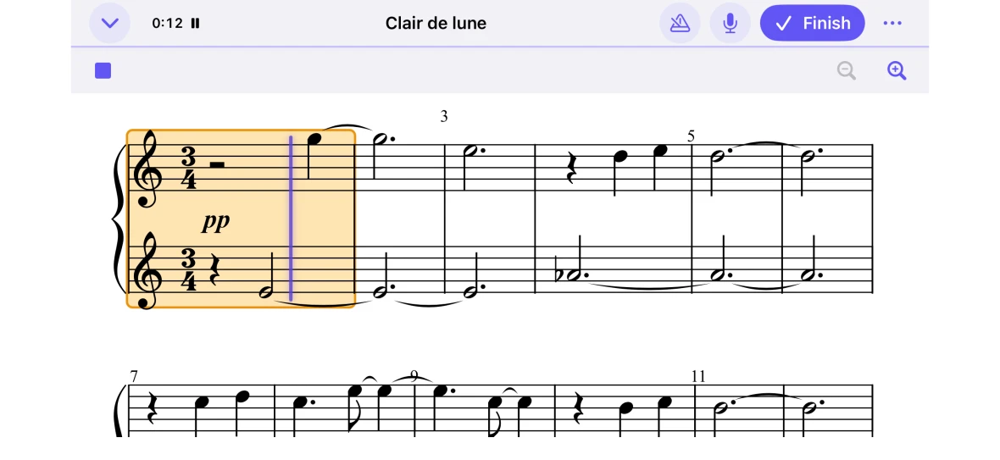

iOS 1.0.2 preview
Practice with the score in front of you.
Open an available score or import MusicXML. Play from any bar, loop a passage, and follow the cursor as the music plays. With a multi-part score, read your part and play along with the others.
Explore score practice